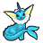
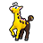
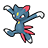
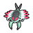
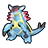
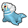
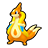
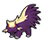
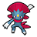

Check out WarriorGallade's post on this Mission for more specific tips.
| Rank | AP | Slates |
|---|---|---|
| S | 80 | Azumarill (90%) Weavile (10%) |
| A | 55 | Girafarig (100%) |
| B | 40 | N/A |
| C | 30 | N/A |
| Pokémon | Quantity | Group | Friendship Gauge |
AP | Slates | |
|---|---|---|---|---|---|---|
|
 |
Vaporeon | 4 (Patterns 2 & 4) | Water | 2,236 | 6 | Vaporeon (100%) |
|
 |
Girafarig | 6 | Psychic | 1,300 | 4 | N/A |
| Dunsparce | 1 (Pattern 3) | Normal | 780 | 3 | Dunsparce (100%) | |
|
 |
Sneasel | 5 (Patterns 1 & 3) 4 (Patterns 2 & 4) |
Dark | 1,300 | 4 | Sneasel (100%) |
| Swinub | 2 (Patterns 2 & 4) | Ground | 1,300 | 5 | Swinub (80%) Piloswine (20%) |
|
| Wingull | 2 (Pattern 1) | Flying | 1,300 | 4 | Wingull (80%) Pelipper (20%) |
|
|
 |
Anorith | 3 (Patterns 2 & 4) | Rock | 1,300 | 4 | Anorith (95%) Armaldo (5%) |
|
 |
Armaldo | 6 (Patterns 2 & 4) | Rock | 2,990 | 8 | Anorith (80%) Armaldo (20%) |
| Spheal | 5 (Pattern 1) 2 (Pattern 3) |
Ice | 1,300 | 4 | Spheal (80%) Sealeo (20%) |
|
| Sealeo | 6 (Pattern 1) 4 (Pattern 3) |
Ice | 1,560 | 5 | Sealeo (80%) Spheal (18%) Walrein (2%) |
|
|
 |
Walrein | 2 (Pattern 1) 5 (Pattern 3) |
Ice | 3,380 | 8 | Sealeo (80%) Walrein (20%) |
| Buizel | 1 (Patterns 2 & 4) | Water | 1,040 | 3 | Buizel (90%) Floatzel (10%) |
|
|
 |
Floatzel | 1 (Pattern 1) | Water | 1,820 | 5 | Floatzel (70%) Buizel (30%) |
|
 |
Stunky | 1 (Pattern 2) | Poison | 780 | 3 | Stunky (95%) Skuntank (5%) |
| Pokémon | Group | Friendship Gauge |
Agitated Gauge |
AP | |
|---|---|---|---|---|---|
|
 |
Weavile | Dark | 4,675 | 337 | 13 |
Text of this section & map image are taken from WarriorGallade's post on the subject, supplemented with information from the official Prima guide book, and condensed/reorganized slightly. Used with permission.
This Mission contains four different patterns of wild Pokémon that can appear. Click a thumbnail below to view that pattern's map.
Legend:
This mission is a great grinding spot, where mass-capturing can rival high-rank AP yields in other missions thanks to two powerups (attack + speed, the "Quick Attack" pair). Although this mission has four patterns, patterns 1 and 3 are similar and 2 and 4 are similar, and should be considered as follows:
Pick Armaldo for max AP and Walrein for a quicker clear. Armaldo becomes more appealing as your team levels up, but by then you're less likely to replay this mission.
Time is tight (starts at 1 minute), making powerups essential.
At low levels: Skip most Pokémon, especially the first attack powerup (guarded by Sealeo/Armaldo). Ignore Girafarig, hit the switch, head north for time powerups, then west (ignoring the second Girafarig/Sneasel) for another. Repeat through the next switch trio and teleporter, continuing to ignore Girafarig on the straight path to the red teleporter. Watch for aggressive Swinub (easy to catch, not a big time cost) and Walrein guarding time extensions. Further north, grab the two key powerups while avoiding other Pokémon (agitated Vaporeon is a tedious capture with Piplup). Collect time powerups at the northmost point, then backtrack for the skipped Girafarig. Near the first green teleporter, clear the two chests guarded by Armaldo/Spheal (approach from top or bottom, not center) to expose time extensions. Capture one of the guarding Pokémon, then use invincibility frames to grab the second extension while dodging the other Pokémon (feasible since neither has much range).
At high levels (~34+): Capture everyone in your path. Grabbing the first attack powerup speeds up captures and reduces backtracking need, letting you grind for Slates, and the invincibility maneuver for time extensions still works even without the speed boost. Still worth grabbing all time powerups as a buffer.
Pattern IdentificationSome Pokémon are only found in certain patterns, so grinding for their Slates is dependent on getting the correct pattern.
Prioritize rushing to the final room while grabbing time powerups. An A rank is achievable early, but S rank requires a high enough level to capture at least two Girafarig on the way there, minimizing backtracking.
Piplup is still ideal: its slowing effect is hugely valuable against Weavile's speed and unpredictable direction changes, and being long-range keeps it safer from Weavile's slash-into-blade combo. Close-range Fighting types (e.g., Hariyama's pause effect) are strong against Weavile's Dark type but riskier, requiring precise positioning.